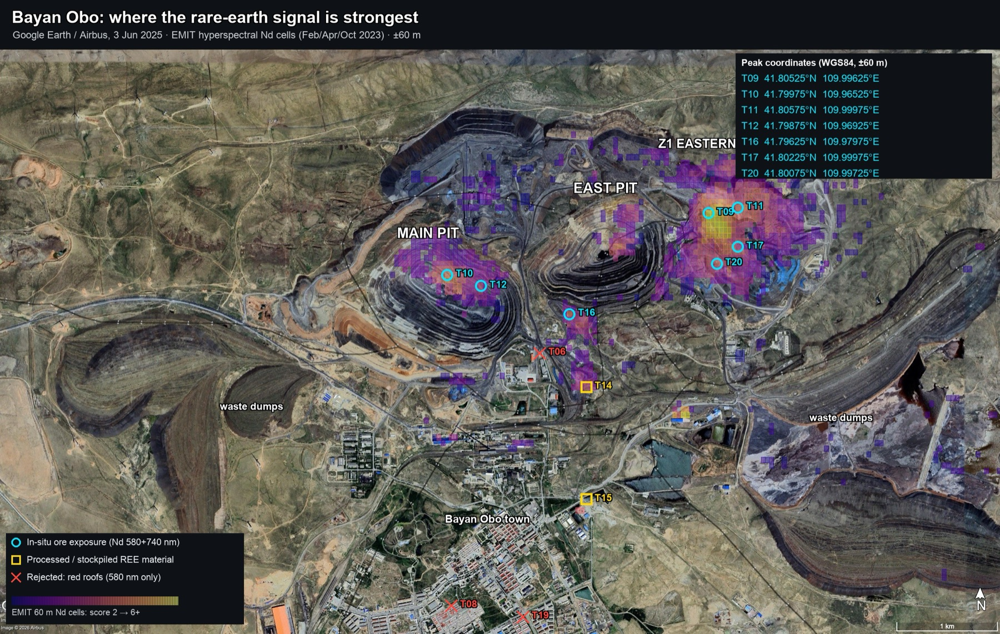
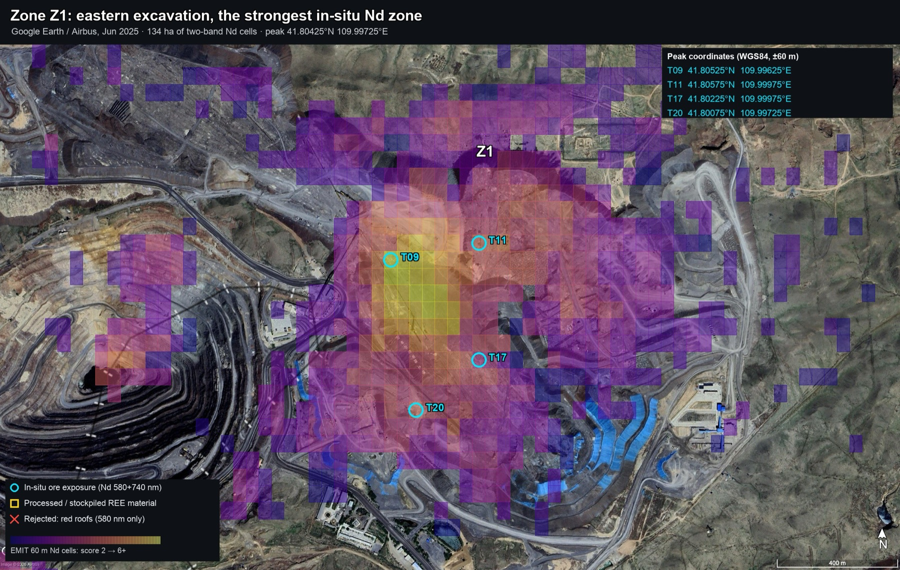
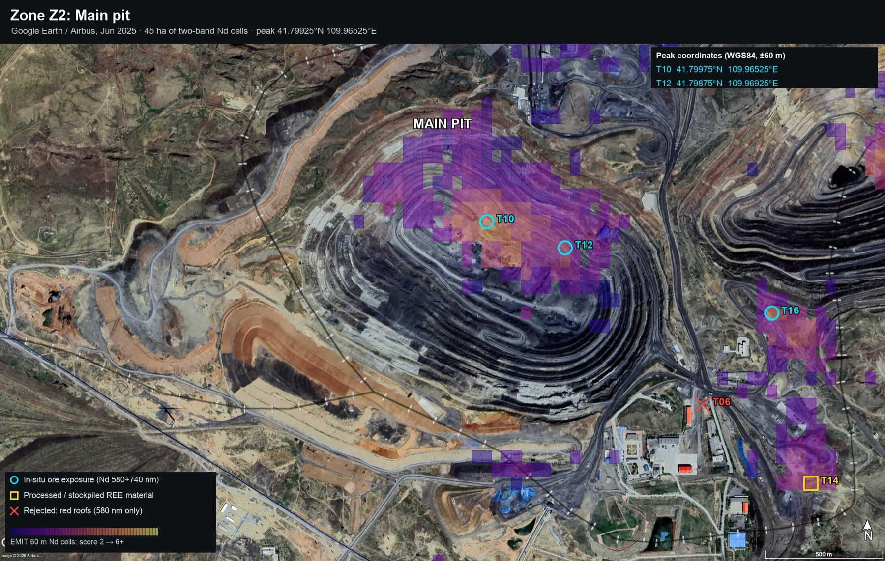
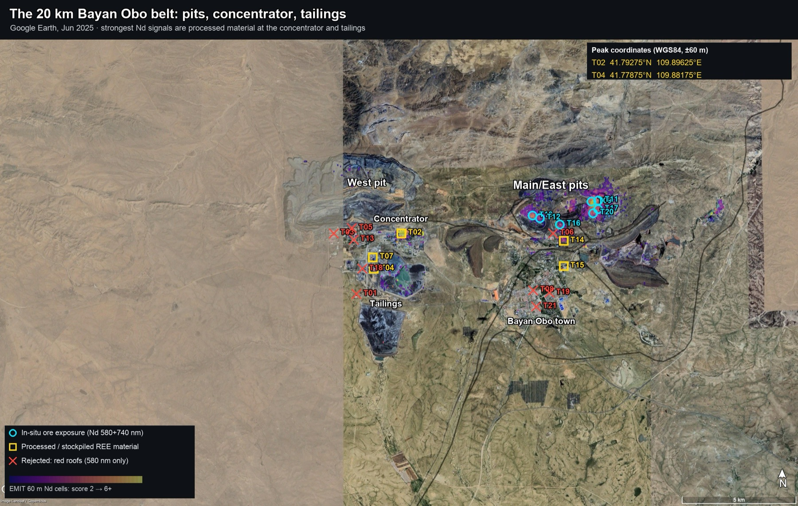
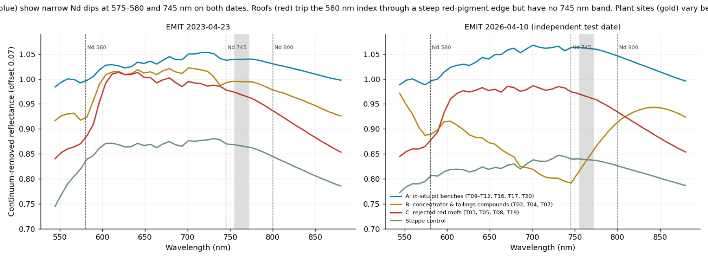
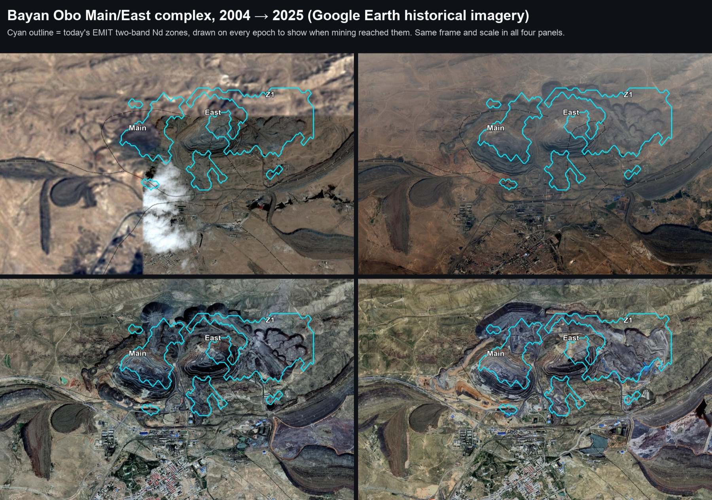
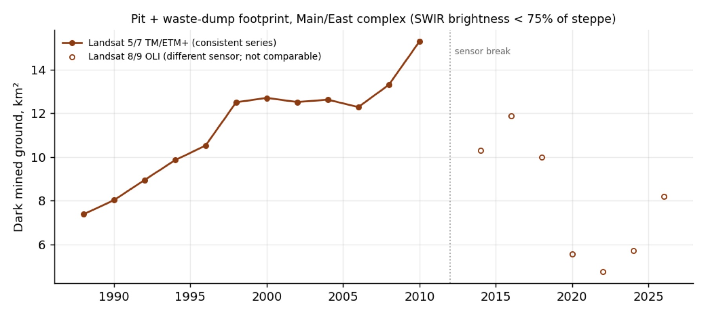
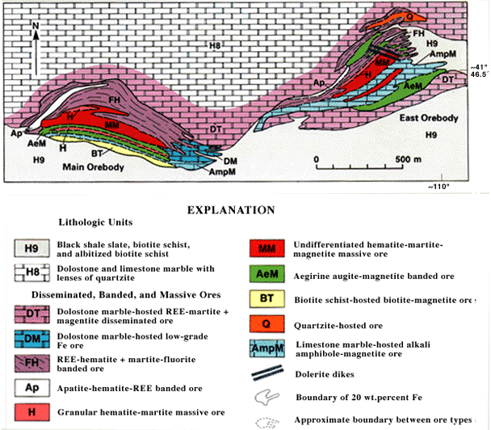

A hyperspectral search for rare-earth absorption across the world's largest REE deposit. It is checked against Google Earth imagery from 2004 to 2025, published grades, control ground, and an independent 2026 overpass.
RegenX.eco · 28 Sep 2026 · NASA EMIT, Sentinel-2, Landsat, Copernicus DEM, Google Earth Pro

| Rank | Zone | Area | Peak lat °N | Peak lon °E | Mean 580 nm depth | Elevation | 2026 check |
|---|---|---|---|---|---|---|---|
| 1 | Z1 · eastern excavation | 134 ha | 41.80425 | 109.99725 | 1.40% | 1,584–1,680 m | T09, T11, T17, T20 all confirmed |
| 2 | Z2 · Main pit | 45 ha | 41.79925 | 109.96525 | 1.42% | 1,501–1,706 m | T10 strongest in 2026 (z 7.8 / 5.4) |
| 3 | Z3 · East pit, north wall | 12 ha | 41.80225 | 109.98575 | 1.33% | 1,390–1,612 m | inside the deep pit |
| 4 | Z4 · East pit, west rim | 9 ha | 41.79625 | 109.97975 | 1.48% | 1,591–1,617 m | T16 confirmed (z 2.9 / 2.3) |
Coordinates are WGS84, accurate to about ±60 m (one EMIT pixel). Depth is the fraction of light absorbed at 580 nm in a 60 m average; it ranks relative abundance and is not a grade.


| ID | Class | Lat °N | Lon °E | z580 (2023) | 740 nm dates | 2026 z580 / z740 | What is on the ground (Google Earth) |
|---|---|---|---|---|---|---|---|
| T09 | A in-situ | 41.80525 | 109.99625 | 6.0 | 3/3 | 4.3 / 3.7 | Z1 excavation benches |
| T10 | A in-situ | 41.79975 | 109.96525 | 5.8 | 3/3 | 7.8 / 5.4 | Main pit benches |
| T11 | A in-situ | 41.80575 | 109.99975 | 5.3 | 3/3 | 5.2 / 3.9 | Z1 excavation benches |
| T12 | A in-situ | 41.79875 | 109.96925 | 5.3 | 3/3 | 3.6 / 3.2 | Main pit benches |
| T16 | A in-situ | 41.79625 | 109.97975 | 5.2 | 3/3 | 2.9 / 2.3 | East pit west rim |
| T17 | A in-situ | 41.80225 | 109.99975 | 5.1 | 3/3 | 4.2 / 3.1 | Z1 excavation benches |
| T20 | A in-situ | 41.80075 | 109.99725 | 5.0 | 3/3 | 2.9 / 2.5 | Z1 excavation benches |
| T02 | B processed | 41.79275 | 109.89625 | 25.4 | 3/3 | 1.3 / 6.7 | Concentrator (blue roofs, tanks) |
| T04 | B processed | 41.77875 | 109.88175 | 20.9 | 3/3 | 16.6 / 4.8 | Compound by tailings pond |
| T07 | B processed | 41.78325 | 109.88125 | 8.0 | 3/3 | 11.8 / 9.7 | Compound by tailings pond |
| T14 | B processed | 41.78975 | 109.98175 | 5.3 | 2/3 | 3.6 / 2.5 | Dark stockpile by rail loop |
| T15 | B processed | 41.77975 | 109.98175 | 5.3 | 2/3 | 1.3 / 2.5 | Industrial site by pond, NE of town |
| T01, T03, T05, T06, T08, T13, T18, T19, T21 | C rejected | 580 nm only; 740 nm band absent on 0–1 of 3 dates (T21: 2, but redness 1.23); redness 1.13–1.43 | Red-roofed housing and buildings; one industrial yard | ||||
A further industrial site about 5 km east (plant, pond and stockpiles at 41.8003°N 110.0593°E) also carries the signal. It is excluded from the in-place list for the same reason as class B.

Neodymium, about 8–14% of the rare-earth content in Bayan Obo's bastnäsite and monazite (USGS Bulletin 2143), has sharp absorptions at about 580, 745 and 800 nm. Their positions don't depend on the host mineral. A 2024 Scientific Reports study mapped them from EnMAP satellite data at Mountain Pass, California. EMIT on the ISS samples every 7.4 nm, fine enough to resolve them.

| Test | Result |
|---|---|
| Band shape at Z1 | Gaussian fit: centre 577–580 nm, width 21–23 nm, depth 3.7% (Feb) and 1.8% (Apr). Narrow like Nd³⁺; hematite's band is over 60 nm wide. |
| Repeatability | Hotspots on Feb vs Apr 2023 overlap 413 times against 8 expected by chance (50×). Cells anomalous on ≥2 dates: 8,033 against a chance mean of 2,523 in 200 spatial shuffles. |
| Control ground, two-band rule | Town 0/1,560 cells · steppe 0/4,000 · granite 0/7,200. |
| Independent date (10 Apr 2026) | All 7 in-place targets have both bands at z > 2. 21.7% of the 2023 zone cells repeat, against 0–0.9% on control ground. |
| Atmosphere and elevation | O₂-A (760 nm) and O₂-B (687 nm) residuals appear everywhere, so shoulders straddle them and scores are scene-relative. Correlation with elevation outside the mine: |r| ≤ 0.05. |
| Sentinel-2 | Its 740 nm band is dominated by the vegetation red edge. After correction it agrees with EMIT only at r = 0.20, so it is used for context only. |



It locates surface rare-earth exposure. It does not give tonnage or grade. EMIT sees the top millimetres of a 60 m cell, mixed with dust, benches and shadow. The published numbers are the anchor. Unmineralised H8 dolomite carries 0.04–0.08% RE₂O₃. Disseminated ore runs 2 to over 6%. Most banded ores are below 20%, with rich bands at 36–48% (USGS Bulletin 2143). The whole deposit is often cited at about 333 Mt REE₂O₃ averaging roughly 2%.
Precision. ±60 m per coordinate. The deposit is being mined continuously, so exposed faces change month to month. The 2026 recheck shows the zones persist, with the Main pit relatively stronger than in 2023.
Next steps if you need grade. EnMAP or PRISMA tasking at 30 m would double the resolution; DLR's EnMAP catalogue was down during this work. Beyond that, WorldView-3 SWIR, or handheld spectrometer and XRF traverses on the Z1 benches. Any such work in China needs the operator's cooperation and national permits.
Download the KML (zones and targets) for Google Earth · Code and data on GitHub